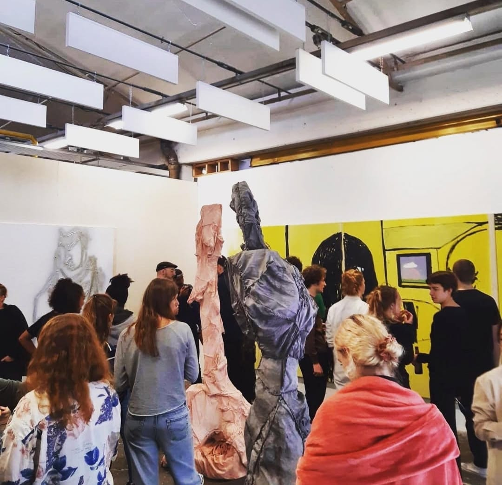
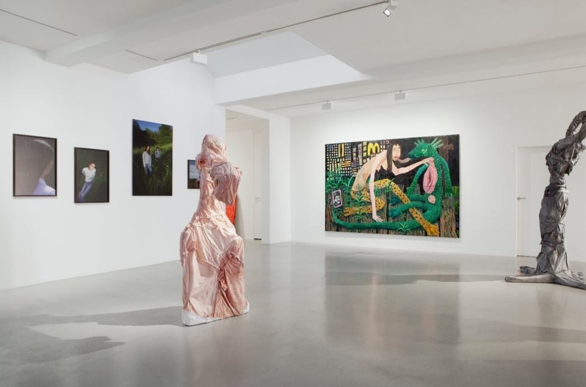
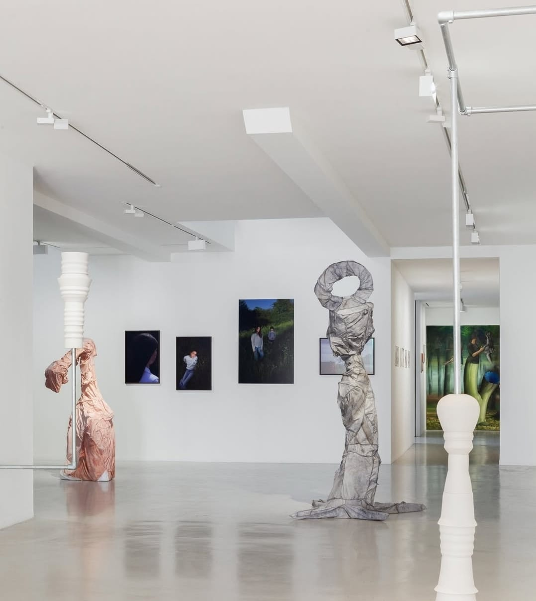
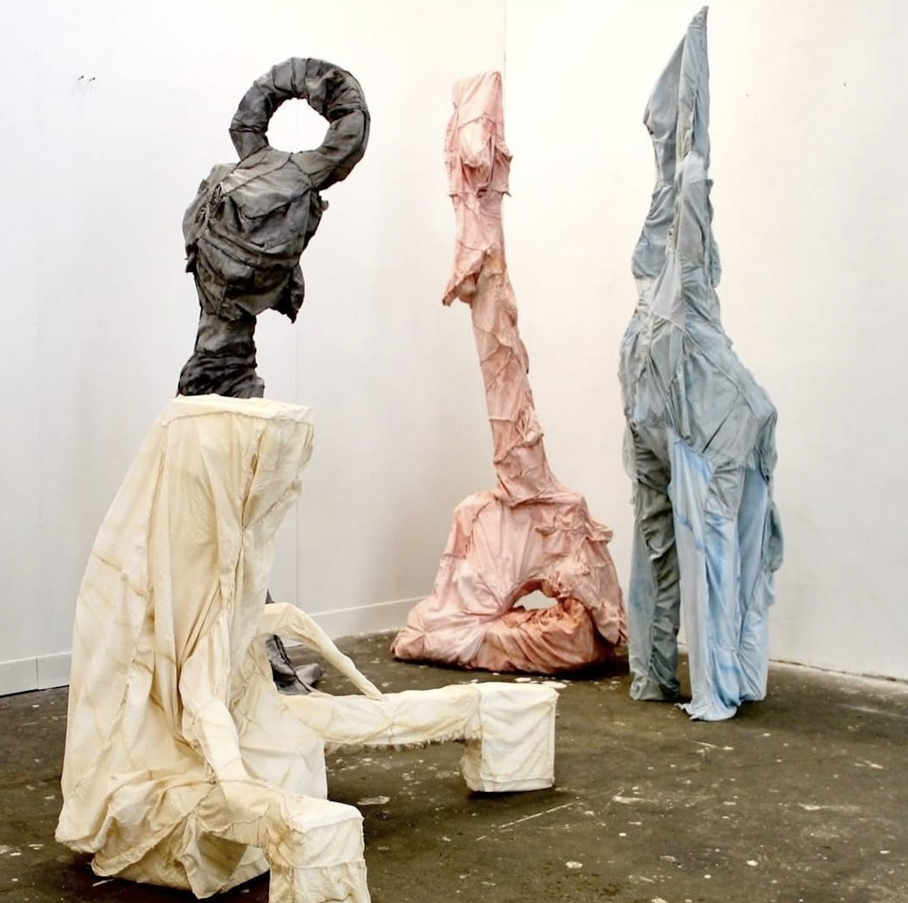
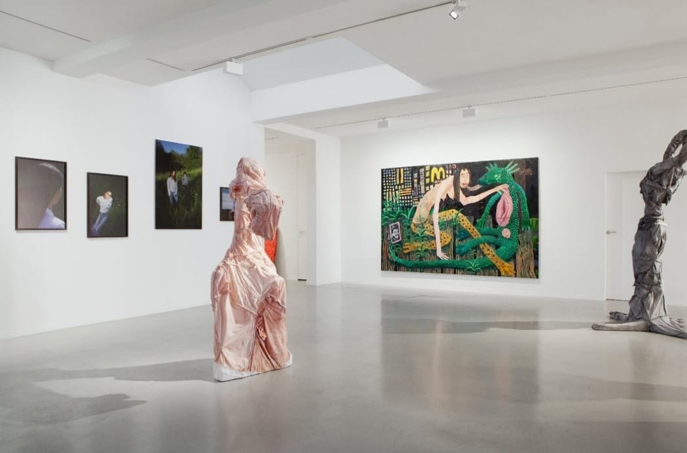
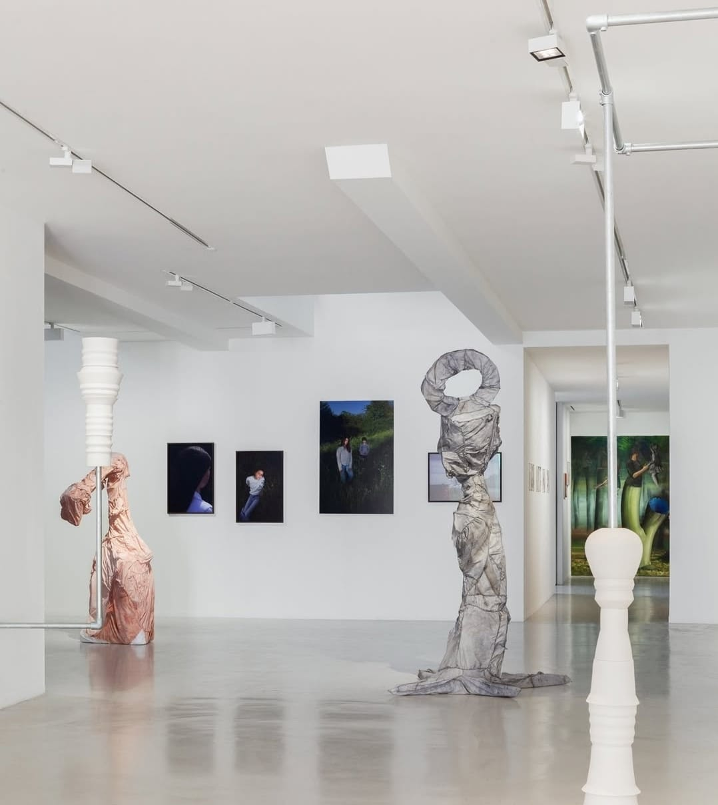
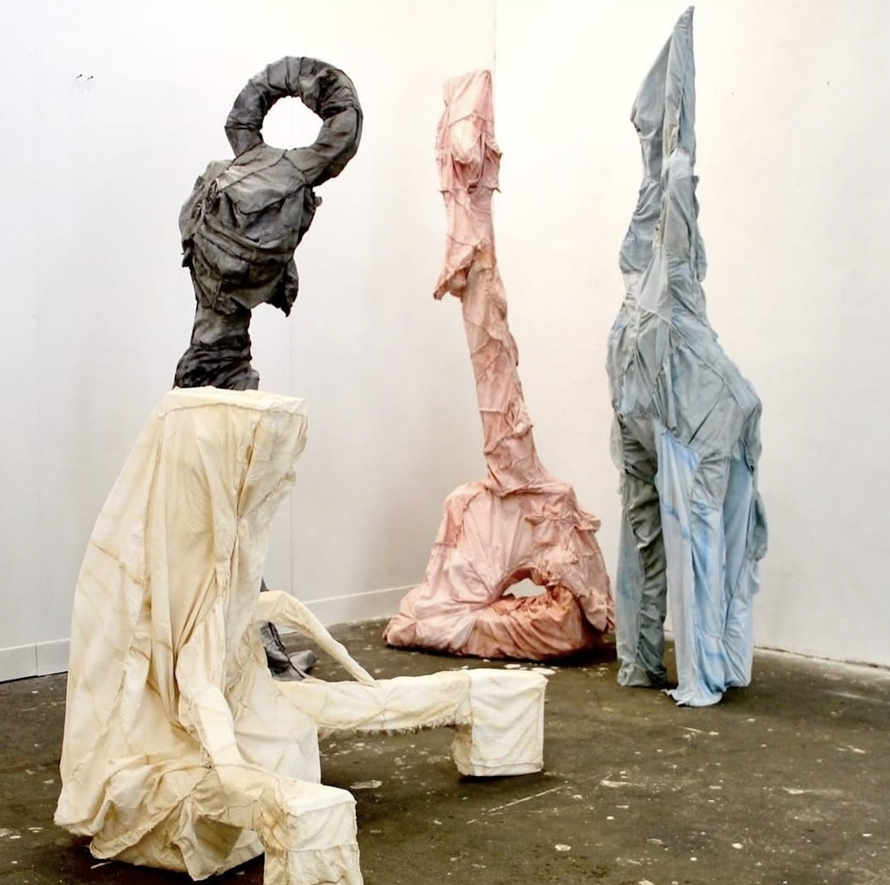
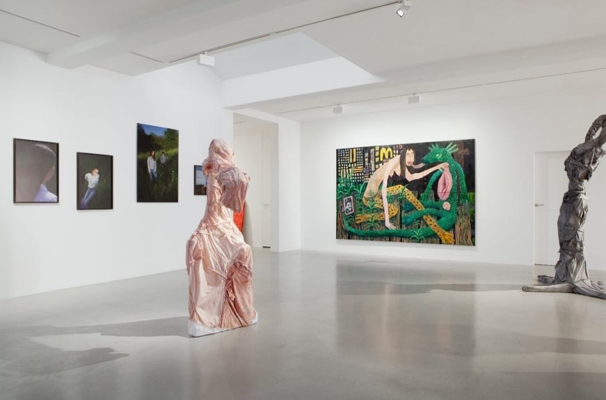
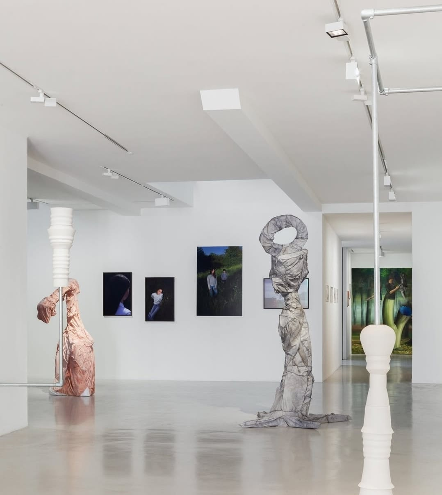
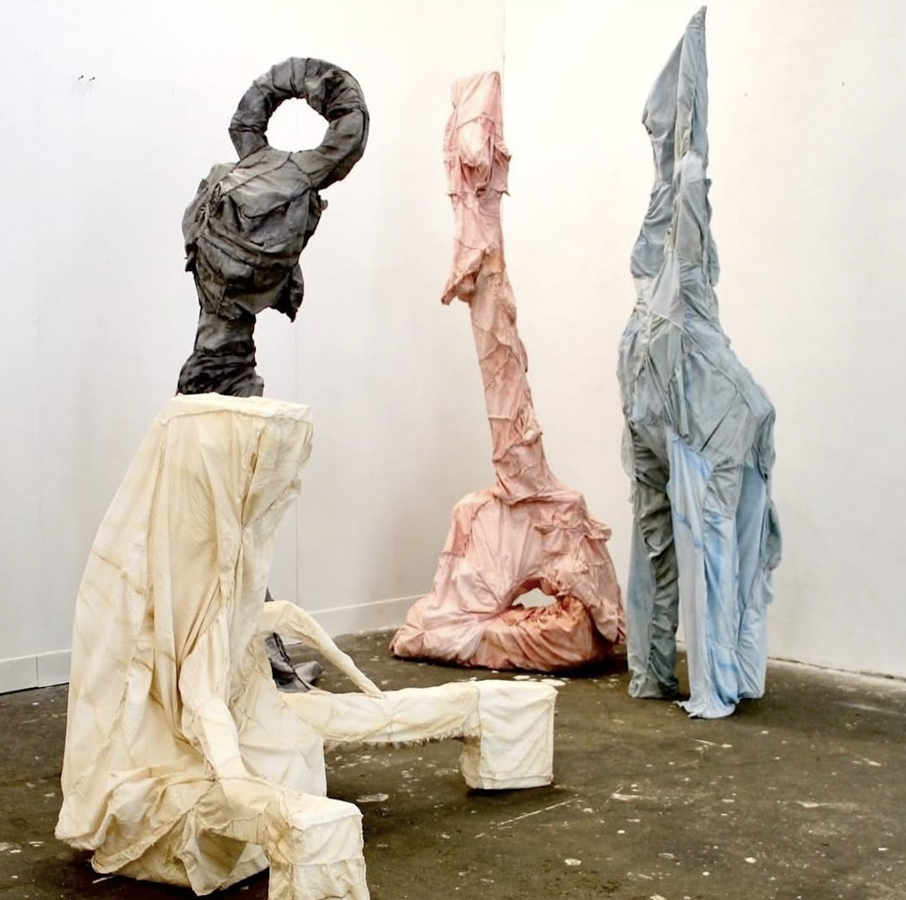

Fine Arts
My graduation work at Hogeschool voor de Kunsten Utrecht.
I've participated in numerous exhibitions and projects including:
Group Exhibitions
- 2020 November: ALL INN National Fine Arts exhibition Het Hem, Zaandam, NL
- 2020 September: HKU Graduation Show Pastoe Fabriek, Utrecht, NL
- 2019 October: Does the Fish Know it's Water? TUUB, Utrecht, NL
- 2019 February: Take Part Gallery Niek Waterbolk, Utrecht, NL
Solo Exhibitions
- 2019 May: Speak Europe Festival Centraal Bibliotheek Utrecht, NL
Projects
- 2017: Kunstliefde by David Bade Centraal Museum Utrecht, NL
Publications
- Metropolis M Eindexamen Special (October 2020)
- 'TWENTYTWENTY' Collaboration with Koen Taselaar and HKU graduating students
Initiatives
-
Tools for the Times
Tools for the Times is a student/teacher founded and led initiative that focuses on how we - as participants in the Art Academy Utrecht - practice inclusivity. How can we make the academy more sensitive towards diverse voices, minds and bodies in contexts of teaching, learning and administration?
- 2020 Open Session #1 Online discussion group series
- 2019 Lecture and workshops Guests: Quinsy Gario, Sarita Bajnath, Milo van der Maaden


 







